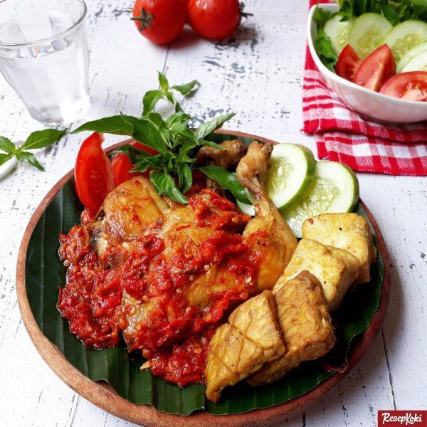

Pantang Takicok
Sakali Mancubo,Pasti Babaliak!

Pemesanan
Isi form pemesanan dengan klik tombol Pesan di bawah
Pecel Ayam
Diposting pada 15.30 WIB, 13 Oktober 2023
Pecel ayam atau pecek ayam di Indonesia adalah nama sebuah makanan khas Jawa yang terdiri dari ayam ungkep dan sambal tomat. Makanan ini sangat digemari di Pulau Jawa sebagai alternatif masakan ayam, terutama ayam goreng.
Jadwal Buka
Jadwal Buka
Senin - Sabtu
08.00 WIB - 22.00 WIB